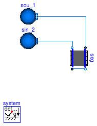
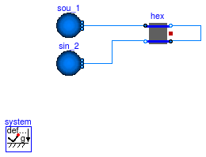

Example models to test base classes
Information
Extends from Modelica.Icons.ExamplesPackage (Icon for packages containing runnable examples).
Package Content
Model that tests a basic segment that is used to build a borehole

Information
This example illustrates modeling a segment of a borehole heat exchanger.
It simulates the behavior of the borehole on a single horizontal section including the ground and the
boundary condition.
Extends from Modelica.Icons.Example (Icon for runnable examples).
Parameters
| Type | Name | Default | Description |
|---|
| Bentonite | bento | | Borehole filling material |
Modelica definition
model BoreholeSegment
"Model that tests a basic segment that is used to build a borehole"
extends Modelica.Icons.Example;
package Medium =
Buildings.Media.Water "Medium in the pipes";
parameter Buildings.HeatTransfer.Data.BoreholeFillings.Bentonite bento
"Borehole filling material";
Buildings.Fluid.HeatExchangers.Boreholes.BaseClasses.BoreholeSegment seg(
redeclare package Medium = Medium,
matFil=bento,
m_flow_nominal=0.2,
dp_nominal=5,
rTub=0.02,
eTub=0.002,
rBor=0.1,
rExt=3,
nSta=9,
samplePeriod=604800,
kTub=0.5,
hSeg=10,
xC=0.05,
redeclare Buildings.HeatTransfer.Data.Soil.Concrete matSoi,
energyDynamics=Modelica.Fluid.Types.Dynamics.SteadyStateInitial,
TFil_start=283.15,
TExt_start=283.15)
"Borehole segment";
Fluid.Sources.Boundary_pT sou_1(
redeclare package Medium = Medium,
nPorts=1,
use_T_in=false,
p=101340,
T=303.15)
"Flow source";
Fluid.Sources.Boundary_pT sin_2(
redeclare package Medium = Medium,
use_p_in=false,
use_T_in=false,
nPorts=1,
p=101330,
T=283.15)
"Flow sink";
equation
connect(sou_1.ports[1], seg.port_a1);
connect(seg.port_b1, seg.port_a2);
connect(seg.port_b2, sin_2.ports[1]);
end BoreholeSegment;
Model that tests a basic segment that is used to build a borehole
Information
This example tests the function for the convective thermal resistance
inside the pipe.
Extends from Modelica.Icons.Example (Icon for runnable examples).
Parameters
| Type | Name | Default | Description |
|---|
| SpecificHeatCapacity | cpMed | Medium.specificHeatCapacityC... | Specific heat capacity of the fluid [J/(kg.K)] |
| ThermalConductivity | kMed | Medium.thermalConductivity(M... | Thermal conductivity of the fluid [W/(m.K)] |
| DynamicViscosity | mueMed | Medium.dynamicViscosity(Medi... | Dynamic viscosity of the fluid [Pa.s] |
| MassFlowRate | m_flow_nominal | 3000/10/4200 | Nominal mass flow rate [kg/s] |
Modelica definition
model ConvectionResistance
"Model that tests a basic segment that is used to build a borehole"
extends Modelica.Icons.Example;
package Medium =
Buildings.Media.Water "Medium in the pipes";
parameter Modelica.SIunits.SpecificHeatCapacity cpMed=
Medium.specificHeatCapacityCp(
Medium.setState_pTX(
Medium.p_default,
Medium.T_default,
Medium.X_default))
"Specific heat capacity of the fluid";
parameter Modelica.SIunits.ThermalConductivity kMed=
Medium.thermalConductivity(
Medium.setState_pTX(
Medium.p_default,
Medium.T_default,
Medium.X_default))
"Thermal conductivity of the fluid";
parameter Modelica.SIunits.DynamicViscosity mueMed=
Medium.dynamicViscosity(
Medium.setState_pTX(
Medium.p_default,
Medium.T_default,
Medium.X_default))
"Dynamic viscosity of the fluid";
parameter Modelica.SIunits.MassFlowRate m_flow_nominal=
3000/10/4200
"Nominal mass flow rate";
Modelica.SIunits.MassFlowRate m_flow
"Mass flow rate";
Modelica.SIunits.ThermalResistance R
"Thermal resistance between the fluid and the tube";
protected
constant Real conv(unit="1/s")=1
"Conversion factor";
algorithm
m_flow :=m_flow_nominal*(time - 0.5)*2*conv;
R :=
Buildings.Fluid.HeatExchangers.Boreholes.BaseClasses.convectionResistance(
hSeg=10,
rTub=0.02,
kMed=kMed,
mueMed=mueMed,
cpMed=cpMed,
m_flow=m_flow,
m_flow_nominal=m_flow_nominal);
end ConvectionResistance;
Test problem for the function that exchanges values
Information
This example tests the function
Buildings.Fluid.HeatExchangers.Boreholes.BaseClasses.exchangeValues by
assigning and reading different elements of the array.
The assert statements check whether the returned values is correct.
Extends from Modelica.Icons.Example (Icon for runnable examples).
Parameters
| Type | Name | Default | Description |
|---|
| Real | x | 3 | |
Modelica definition
model ExchangeValues
"Test problem for the function that exchanges values"
extends Modelica.Icons.Example;
parameter Real x = 3;
Real y;
Buildings.Fluid.HeatExchangers.Boreholes.BaseClasses.ExtendableArray table=
Buildings.Fluid.HeatExchangers.Boreholes.BaseClasses.ExtendableArray()
"Extentable array, used to store history of rate of heat flows";
algorithm
y :=
Buildings.Fluid.HeatExchangers.Boreholes.BaseClasses.exchangeValues(
table=table, iX=1, x=x, iY=1);
assert(
abs(y-3) < 1E-10, "Error in implementation of exchangeVaules.");
y :=
Buildings.Fluid.HeatExchangers.Boreholes.BaseClasses.exchangeValues(
table=table, iX=2, x=4*x, iY=1);
assert(
abs(y-3) < 1E-10, "Error in implementation of exchangeVaules.");
y :=
Buildings.Fluid.HeatExchangers.Boreholes.BaseClasses.exchangeValues(
table=table, iX=2, x=4*x, iY=2);
assert(
abs(y-12) < 1E-10, "Error in implementation of exchangeVaules.");
y :=
Buildings.Fluid.HeatExchangers.Boreholes.BaseClasses.exchangeValues(
table=table, iX=200, x=5*x, iY=1);
assert(
abs(y-3) < 1E-10, "Error in implementation of exchangeVaules.");
y :=
Buildings.Fluid.HeatExchangers.Boreholes.BaseClasses.exchangeValues(
table=table, iX=10, x=6*x, iY=200);
assert(
abs(y-15) < 1E-10, "Error in implementation of exchangeVaules.");
y :=
Buildings.Fluid.HeatExchangers.Boreholes.BaseClasses.exchangeValues(
table=table, iX=10, x=6*x, iY=1);
assert(
abs(y-3) < 1E-10, "Error in implementation of exchangeVaules.");
end ExchangeValues;
Test the function factorial
Information
This example tests the function
Buildings.Fluid.HeatExchangers.Boreholes.BaseClasses.factorial.
Extends from Modelica.Icons.Example (Icon for runnable examples).
Parameters
| Type | Name | Default | Description |
|---|
| Integer | x[:] | {1,2,3,4,5} | |
Modelica definition
model Factorial
"Test the function factorial"
extends Modelica.Icons.Example;
parameter Integer x[:] = {1, 2, 3, 4, 5};
Integer y[5];
equation
y =
Buildings.Fluid.HeatExchangers.Boreholes.BaseClasses.factorial(x);
assert(
abs(120-y[5]) < 1E-10, "Error: Factorial function yields wrong result.");
end Factorial;
Model that tests the basic element that is used to built borehole models

Information
This example illustrates modeling the internal part of a borehole heat exchanger.
The borehole is constitued with two pipes that are symetricaly spaced in the borehole.
Extends from Modelica.Icons.Example (Icon for runnable examples).
Modelica definition
model HexInternalElement
"Model that tests the basic element that is used to built borehole models"
extends Modelica.Icons.Example;
package Medium =
Buildings.Media.Water "Fluid";
Buildings.Fluid.HeatExchangers.Boreholes.BaseClasses.HexInternalElement hex(
redeclare package Medium = Medium,
m1_flow_nominal=0.3,
m2_flow_nominal=0.3,
rTub=0.02,
kTub=0.5,
rBor=0.1,
xC=0.025,
kSoi=3.1,
dp1_nominal=5,
dp2_nominal=5,
hSeg=20,
redeclare parameter Buildings.HeatTransfer.Data.BoreholeFillings.Bentonite matFil,
redeclare parameter Buildings.HeatTransfer.Data.Soil.Sandstone matSoi,
energyDynamics=Modelica.Fluid.Types.Dynamics.FixedInitial,
TFil_start=283.15);
Buildings.Fluid.Sources.Boundary_pT sou_1(
redeclare package Medium = Medium,
nPorts=1,
use_T_in=false,
p=101340,
T=303.15);
Buildings.Fluid.Sources.Boundary_pT sin_2(
redeclare package Medium = Medium,
nPorts=1,
use_p_in=false,
use_T_in=false,
p=101330,
T=283.15);
equation
connect(sou_1.ports[1], hex.port_a1);
connect(hex.port_b1, hex.port_a2);
connect(hex.port_b2, sin_2.ports[1]);
end HexInternalElement;
Test model the temperature boundary condition of a single U tube heat exchanger

Information
This example tests the temperature boundary condition at the external part of a cylinder.
Extends from Modelica.Icons.Example (Icon for runnable examples).
Parameters
| Type | Name | Default | Description |
|---|
| HeatFlowRate | Q_flow | -50 | Heat flow rate extracted at center of cylinder [W] |
Modelica definition
model SingleUTubeBoundaryCondition
"Test model the temperature boundary condition of a single U tube heat exchanger"
extends Modelica.Icons.Example;
parameter Modelica.SIunits.HeatFlowRate Q_flow=-50
"Heat flow rate extracted at center of cylinder";
Buildings.Fluid.HeatExchangers.Boreholes.BaseClasses.SingleUTubeBoundaryCondition
TBouSte(
final rExt=3,
final samplePeriod=604800,
hSeg=1,
redeclare final Buildings.HeatTransfer.Data.Soil.Sandstone matSoi,
TExt_start=293.15)
"Boundary condition";
Modelica.Blocks.Sources.Step step(
height=Q_flow,
offset=0,
startTime=0);
Buildings.Fluid.HeatExchangers.Boreholes.BaseClasses.SingleUTubeBoundaryCondition
TBouCon(
final rExt=3,
final samplePeriod=604800,
hSeg=1,
redeclare final Buildings.HeatTransfer.Data.Soil.Sandstone matSoi,
TExt_start=293.15)
"Boundary condition";
Modelica.Blocks.Sources.Constant con(k=Q_flow);
Buildings.Fluid.HeatExchangers.Boreholes.BaseClasses.SingleUTubeBoundaryCondition
TBouPul(
final rExt=3,
final samplePeriod=604800,
hSeg=1,
redeclare final Buildings.HeatTransfer.Data.Soil.Sandstone matSoi,
TExt_start=293.15)
"Boundary condition";
Modelica.Blocks.Sources.Pulse pulse(
offset=0,
startTime=0,
amplitude=2*Q_flow,
period=7200);
equation
connect(con.y, TBouCon.Q_flow);
connect(step.y, TBouSte.Q_flow);
connect(pulse.y, TBouPul.Q_flow);
end SingleUTubeBoundaryCondition;
Model that tests the resistances in the borehole
Information
This example tests the thermal resistances in the borehole.
Extends from Modelica.Icons.Example (Icon for runnable examples).
Parameters
| Type | Name | Default | Description |
|---|
| Height | hSeg | 1 | Height of the element [m] |
| Radius | rBor | 0.2 | Radius of the borehole [m] |
| ThermalResistance | Rgb | | Thermal resistance between grout zone and borehole wall [K/W] |
| ThermalResistance | Rgg | | Thermal resistance between the two grout zones [K/W] |
| ThermalResistance | RCondGro | | Thermal resistance of the pipe wall [K/W] |
| Real | x | | Capacity location |
| Soil |
| Granite | matSoi | redeclare parameter Building... | Thermal properties of soil |
| Filling material |
| Bentonite | matFil | redeclare parameter Building... | Thermal properties of the filling material |
| Tubes |
| Radius | rTub | 0.02 | Radius of the tubes [m] |
| ThermalConductivity | kTub | 0.5 | Thermal conductivity of the tube [W/(m.K)] |
| Length | eTub | 0.002 | Thickness of a tube [m] |
| Borehole |
| Length | xC | 0.05 | Shank spacing, defined as the distance between the center of a pipe and the center of the borehole [m] |
Modelica definition
model SingleUTubeResistances
"Model that tests the resistances in the borehole"
extends Modelica.Icons.Example;
package Medium =
Buildings.Media.Water "Medium in the pipes";
replaceable parameter Buildings.HeatTransfer.Data.Soil.Granite matSoi
"Thermal properties of soil";
replaceable parameter Buildings.HeatTransfer.Data.BoreholeFillings.Bentonite matFil
"Thermal properties of the filling material";
parameter Modelica.SIunits.Height hSeg=1
"Height of the element";
parameter Modelica.SIunits.Radius rBor=0.2
"Radius of the borehole";
parameter Modelica.SIunits.Radius rTub=0.02
"Radius of the tubes";
parameter Modelica.SIunits.ThermalConductivity kTub=0.5
"Thermal conductivity of the tube";
parameter Modelica.SIunits.Length eTub=0.002
"Thickness of a tube";
parameter Modelica.SIunits.Length xC=0.05
"Shank spacing, defined as the distance between the center of a pipe and the center of the borehole";
parameter Modelica.SIunits.ThermalResistance Rgb(fixed=false)
"Thermal resistance between grout zone and borehole wall";
parameter Modelica.SIunits.ThermalResistance Rgg(fixed=false)
"Thermal resistance between the two grout zones";
parameter Modelica.SIunits.ThermalResistance RCondGro(fixed=false)
"Thermal resistance of the pipe wall";
parameter Real x(fixed=false)
"Capacity location";
initial equation
(Rgb, Rgg, RCondGro, x) =
Buildings.Fluid.HeatExchangers.Boreholes.BaseClasses.singleUTubeResistances(
hSeg=hSeg,
rBor=rBor,
rTub=rTub,
eTub=eTub,
xC=xC,
kSoi=matSoi.k,
kFil=matFil.k,
kTub=kTub);
end SingleUTubeResistances;
Automatically generated Mon Jul 13 14:24:29 2015.
 Buildings.Fluid.HeatExchangers.Boreholes.BaseClasses.Examples.BoreholeSegment
Buildings.Fluid.HeatExchangers.Boreholes.BaseClasses.Examples.BoreholeSegment